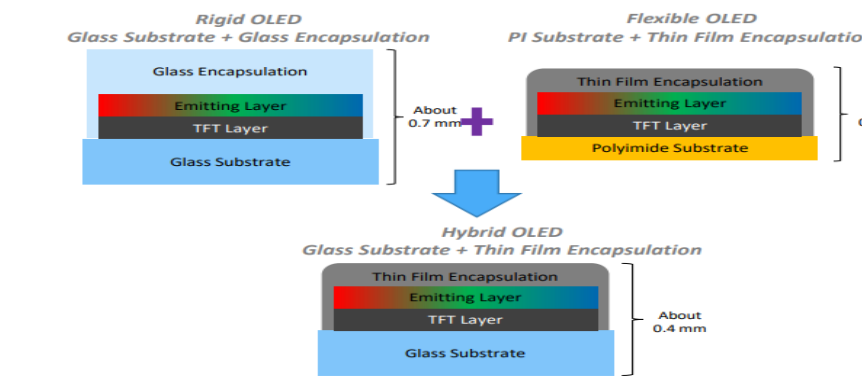
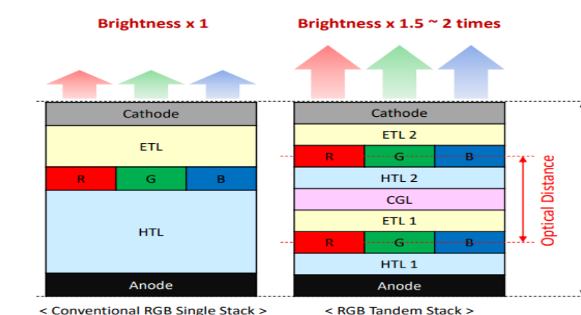
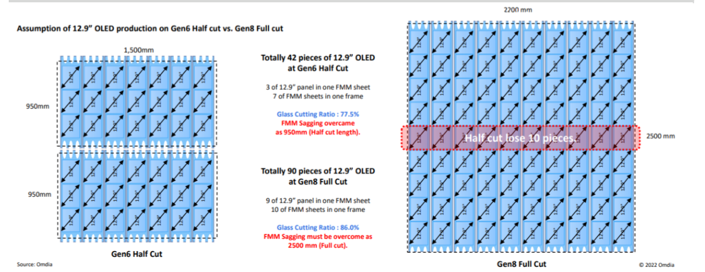

디스플레이 패널과 기술 — LCD는 중국에 넘어갔고, 싸움터는 IT OLED·폴더블
원천 한계
- 기술 설명·세대·증착 방식·점유율 그림은 대부분 신한(2026-02-26) 섹터 리포트 1건에 기댐 → 그래프 수치는 판독값(근사)
- 나머지는 키움(2025-11-25)·iM·메리츠·대신·IBK의 패널·소재 기업 리포트에서 기술 사실만 추출
- 중국 패널사(BOE·CSOT·Visionox) 자체 수율·가동률, QD-OLED vs WOLED 출하 수치는 원천 없음 ⚠
- 증설 일정·장비 발주 세부는 04_디스플레이_장비와증설, 소재(블랙 PDL·UTG·CPI)는 05_디스플레이_부품소재
한눈에 보기
결론
- LCD는 중국이 «보조금 → 10.5세대 대형 팹 → 물량 공세»로 장악(LCD TV 패널 약 70%). 한국은 OLED로 피신
- OLED는 LCD와 달리 «고객 인증 → 선 수주 → 후 증설» 구조 + 기술 진화(LTPO·탠덤·CoE)가 계속 → 한국 우위가 LCD처럼 무너지진 않는다는 게 공통 시각
- 다음 전장: 2026년 양산 시작한 8.6세대 IT OLED(원가 −10~20%)와 폴더블. 중국은 BOE 8.6세대·폴더블 점유로 추격 중
| 항목 | 값 | 출처 |
|---|---|---|
| 한·중 OLED 기술 격차 | 4~5년 → 1~2년 | (신한, 2026-02-26) |
| OLED 캐파 한국 비중(면적) | 약 98% → 70% | (신한 p.14, 그래프 판독) |
| LCD TV 패널 중국 점유 2025 | 약 70% | (신한 p.14, 그래프 판독) |
| 8.6세대 원장 vs 6세대 | 면적 2.2배 · 원가 −10~20% | (신한, 2026-02-26) |
| 탠덤 OLED 효과 | 휘도 2배 · 수명 4배 | (신한, 2026-02-26) |
OLED 캐파 한국 비중: 2014 → 2026F
flowchart LR LCD["LCD<br/>백라이트+액정<br/>중국 10.5G 장악"] --> RIG["Rigid OLED<br/>유리 기판+유리 봉지"] RIG --> FLEX["Flexible OLED<br/>PI 기판+TFE<br/>스마트폰 주력"] FLEX --> LTPO["LTPO → LTPO+<br/>가변 주사율·저전력"] FLEX --> FOLD["폴더블<br/>UTG·CPI·힌지"] RIG --> HYB["Hybrid OLED<br/>유리 기판+TFE"] HYB --> TAN["탠덤 OLED<br/>IT용 장수명"] TAN --> G86["8.6세대 IT OLED<br/>2026 양산"] LCD --> MINI["미니LED<br/>LCD 백라이트 개선"] MINI --> MICRO["마이크로LED<br/>전사 난제"]
구성: 신한(2026-02-26) p.14·p.23~25·p.44~51 내용을 엮음
- 관련 노트: 00_디스플레이_index · 01_디스플레이_용어집 · 02_디스플레이_수요와전방 · 04_디스플레이_장비와증설 · 05_디스플레이_부품소재 · 06_디스플레이_시장규모모델 · 07_디스플레이_하우스시각_변경이력 · 08_디스플레이_트래킹캘린더
① 기술 기초
요약
- 패널 = 기판 + TFT(스위치) + 발광층(OLED) 또는 백라이트·액정(LCD) + 봉지
- OLED는 자체 발광 → 명암비·응답속도·두께 우위, 약점은 수명·번인·가격
- TFT 종류(a-Si·LTPS·Oxide·LTPO)가 해상도·전력·크기 한계를 정함
OLED vs LCD
| 구분 | OLED | LCD |
|---|---|---|
| 광원 | 유기물 자체 발광 | 백라이트 + 액정 + 컬러필터 |
| 명암비 | 무한대(완전 검정) | 빛샘 → 검정 한계 |
| 응답속도(모니터) | 0.03ms | 3.0ms |
| 주사율(모니터) | 480Hz | 120Hz |
| 휘도(모니터) | 1,300니트 | 450니트 |
| 약점 | 수명 · 번인 · 단가 | 두께 · 명암비 |
모니터 수치는 32인치 480Hz 모델 기준. 자료: LGD, 신한(2026-02-26) p.28·p.44
- 번인 = 오래 켠 소자가 먼저 닳아 잔상이 남는 현상 → 정지화면이 많은 IT 기기에서 특히 문제 (신한, 2026-02-26)
TFT(구동 소자) 종류
| 항목 | a-Si | LTPS | Oxide |
|---|---|---|---|
| 전자 이동도 | 느림 | 빠름 | 보통 |
| 균일성 | 높음 | 낮음 | 보통 |
| 소비전력 | 높음 | 보통 | 낮음 |
| 확장성 | 100인치↑ | 50인치↓ | 100인치 가능 |
| 비용 | 낮음 | 높음 | 보통 |
자료: LGD·언론종합, 신한(2026-02-26) p.40
- LTPO = LTPS + Oxide 혼합 → 화면이 멈추면 주사율을 낮춰 전력 절감 (신한, 2026-02-26)
- 태블릿은 «큰 스마트폰»(터치·가변 주사율) → LTPO, 노트북은 정지화면·장시간 사용 → Oxide (신한, 2026-02-26)
기판·봉지 조합 — Rigid · Flexible · Hybrid
| 방식 | 기판 | 봉지 | 두께 | 주 용도 |
|---|---|---|---|---|
| Rigid | 유리 | 유리 | 약 0.7mm | 중저가 폰 |
| Flexible | PI(폴리이미드) | TFE(박막) | 얇음 | 플래그십·폴더블 |
| Hybrid | 유리 | TFE(박막) | 약 0.4mm | IT·차량 OLED |
자료: 산업 자료, 신한(2026-02-26) p.46

출처: 신한투자증권, 2026-02-26, p.46
② 기술 계보 — LCD에서 OLED, 그리고 IT OLED로
요약
- LCD: 규격 표준 → 범용재 → 선투자·후수요 → 중국이 대형 팹으로 원가를 눌러 장악
- OLED: 세트사마다 곡률·두께·휘도·수명 요구가 다름 → 맞춤형·수주형 산업
- 2026년부터 IT OLED가 6세대(폰 원장)에서 8.6세대(IT 전용 원장)로 넘어감
세대(원장 크기)별 쓰임
| 세대 | 원장 | 주 용도 | 주도 |
|---|---|---|---|
| 5.5G | — | Rigid OLED | 한국 |
| 6G | 1500×1850mm | 모바일 OLED · 기존 IT OLED | 한국 → 중국 추격 |
| 8.5G | — | 대형 OLED(TV·모니터) | 한국 |
| 8.6G | 2250×2500mm | IT OLED(14”↑ 최적) | SDC · BOE 2026 |
| 10.5G | — | 대형 LCD | 중국 |
자료: 신한(2026-02-26) p.14·p.26·p.48. 5.5G·8.5G·10.5G 원장 치수는 원천 없음 ⚠
중국이 LCD를 가져간 방식 vs OLED가 다른 이유
| 축 | LCD | OLED |
|---|---|---|
| 제품 성격 | 범용재(55” 규격 표준) | 고객별 맞춤형 |
| 투자 순서 | 선 증설 → 후 수요 | 선 고객 확보 → 후 증설 |
| 중국 전략 | 보조금 · 10.5G · 물량 공세 | 같은 전략 시도 중 |
| 기술 진화 | 여지 작음 | LTPO·CoE·탠덤 계속 |
| 결과 | 중국 약 70% 점유 | 한국 우위 유지 중 |
(신한, 2026-02-26)
- 패널사가 A 고객용으로 만든 패널은 B 고객에겐 오버스펙·단가 불일치 → 라인이 비어도 다른 고객에 못 돌림(태블릿 OLED 라인 사례) (신한, 2026-02-26)
- 6세대·8.6세대 모두 고객 물량을 확인한 뒤 증설 착수가 관행 (신한, 2026-02-26)
③ 기술 심화
요약
- IT OLED의 벽(번인·수명·가격)을 넘게 한 두 기술 = 탠덤(수명) + 하이브리드(원가)
- 스마트폰은 LTPO → LTPO+, 편광판을 없애는 CoE(무편광)로 진화
- 폴더블은 «얇게·가볍게·주름 없이»가 경쟁 축 → UTG·CPI·힌지
1) 투 스택 탠덤(Two Stack Tandem)

출처: 신한투자증권, 2026-02-26, p.45
| 항목 | 내용 |
|---|---|
| 무엇 | 발광층(EML)을 2단으로 쌓고 CGL로 연결 |
| 원리 | 위아래 층이 발광을 나눠 맡아 부담↓ |
| 효과 | 같은 전류에 휘도 2배 · 수명 4배↑ |
| 왜 중요 | IT 교체주기 4~6년 → 번인 민감 |
| 소재 영향 | 발광 소재 약 50% 추가 |
| 적용 | 아이패드 프로(2024) · 맥북 프로 OLED |
(신한, 2026-02-26)
- OLED는 밝게 쓸수록 수명이 짧아짐(휘도-수명 역관계) → IT는 «피크 밝기»보다 «오래 균일한 밝기»가 중요 (신한, 2026-02-26)
- CGL: 전자를 주는 N-Doped층 + 정공을 주는 P-Doped층 → 아이패드 프로 상시 1,000니트 유지 (신한, 2026-02-26)
- 스마트폰 교체주기 2~3년 vs IT 4~6년 → 탠덤 상용화가 IT 침투의 허들을 넘김 (신한, 2026-02-26)
2) 하이브리드 OLED
| 항목 | 내용 |
|---|---|
| 무엇 | 유리 기판 + 박막 봉지(TFE) |
| vs Rigid | 더 얇고 가벼움(0.7 → 0.4mm) |
| vs Flexible | PI 코팅·LLO 공정 생략 → 저렴 |
| 추가 공정 | 유리 기판 박막화 식각 |
| 적용 | IT OLED · 차량용 OLED |
(신한, 2026-02-26)
- 기존 Rigid 팹에서 만들면 유리 식각이 더 필요, Flexible 팹에선 PI 공정 생략 → 독립 하이브리드 팹이 가장 효율적 (신한, 2026-02-26)
- 대형 기판에서도 TFT 증착에 유리 → 8.6세대 IT OLED의 기본 구조 (신한, 2026-02-26)
3) IT OLED 사양 조합
| 제품 | 스택 | TFT | 기판 |
|---|---|---|---|
| 아이패드 프로(2024) | 2 스택 탠덤 | LTPO | 하이브리드 |
| 아이패드 미니(2H26) | 싱글 스택 | LTPS | 하이브리드 |
| 맥북 프로(2026) | RGB 탠덤 | Oxide | 하이브리드 |
| 맥북 에어(2028 예상) | RGB 탠덤 | LTPO 또는 Oxide | 하이브리드 |
(신한, 2026-02-26)
- 보급형(미니)은 싱글 스택·LTPS로 원가를 낮춤 → 같은 «IT OLED»라도 AAP 격차 큼 (신한, 2026-02-26)
- IT OLED 내 탠덤 비중은 계속 상승 전망(신한 추정 그래프, 2022~2030F) (신한, 2026-02-26)
4) LTPO → LTPO+
| 단계 | 내용 | 출처 |
|---|---|---|
| 아이폰 16 | 기본 LTPS · Pro LTPO | (신한, 2026-02-26) |
| 아이폰 17 | 전 모델 LTPO | (신한, 2026-02-26) |
| 아이폰 18 | LTPO+(IGZO TFT 추가) 전망 | (신한, 2026-02-26) |
| LTPO 비중 3Q25F | Flexible OLED 내 약 58% | (신한 p.19, 그래프 판독) |
- AI 기능 확대 → 전력 효율 요구 → LTPO 고도화가 계속됨 (신한, 2026-02-26)
주요 패널사 LTPO TFT 캐파 (신한 p.53, 그래프 판독·근사)
| 패널사 | k/월 |
|---|---|
| SDC | 약 590 |
| LGD | 약 240 |
| BOE | 약 190 |
| Tianma | 약 125 |
| Visionox | 약 115 |
- BOE는 부족한 LTPO 캐파를 메우려 8.6세대 라인을 LTPO로 구성(SDC는 Oxide) (신한, 2026-02-26)
5) CoE(무편광) · 프라이버시 디스플레이
| 항목 | 내용 | 출처 |
|---|---|---|
| CoE | 봉지 위 컬러필터 → 편광판 제거 | (iM, 2026-03-09) |
| 효과 | 광추출↑ → 밝기↑ · 전력↓ · 얇게 | (iM, 2026-03-09) |
| 핵심 소재 | 블랙 PDL | (iM, 2026-03-09) |
| 프라이버시 | BM + CoE → 측면 시야 차단 | (iM, 2026-03-09) |
| 첫 적용 | 갤럭시 S26 울트라(2026-03) | (iM, 2026-03-09) |
| 아이폰 | 폴더블에 첫 적용 전망 | (키움, 2025-11-25) |
xychart-beta title "무편광(CoE) OLED 패널 출하 (백만대)" x-axis ["2025","2030F"] y-axis "백만대" 0 --> 200 line [31,190]
자료: iM(2026-03-09). 중간 연도 수치는 원문 그래프만 있음
- 프라이버시 모드: 화소를 와이드·내로우로 나눠, 내로우만 켜 빛을 정면으로 모음 → 밝기 손실을 CoE로 보완 (iM, 2026-03-09)
- 2027 상반기 바 타입 아이폰도 CoE 검토 중 (iM, 2026-03-24)
- 소재 상세는 05_디스플레이_부품소재
6) 폴더블 패널
요약
- 두께·무게·주름·내구성이 4대 과제 → 힌지 구조·디지타이저 제거·UTG 두께 증가로 해결 중
- 커버 소재: UTG(유리)가 주류, 애플 폴더블은 UTG 위 보호층에 CPI를 얹는 «UTG+CPI» 조합 전망
- 폼팩터: 클램셸 → 북타입 → 트라이폴드
커버 윈도우 소재 — UTG vs CPI (신한, 2026-02-26)
| 항목 | UTG(초박형 유리) | CPI(투명 PI 필름) |
|---|---|---|
| 두께 | 100㎛ 이하 | 200㎛ 이하 |
| 곡률 반경 | 2~3mm | 1mm(더 잘 접힘) |
| 투과율 | 90%↑ | 90%↓ |
| 주름·경도·촉감 | 우위 | 열위 |
| 내구성·단가 | 열위(비쌈) | 우위(저렴) |
| 첫 적용 | Z 플립1(2020) | Z 폴드1(2020) |
- UTG = 연마 후 화학 강화한 30~100㎛ 유리(Rigid용 유리 500㎛) (신한, 2026-02-26)
- 애플 폴더블: UTG 2장(커버 + 패널 하부 보호) 탑재 전망 (키움, 2025-11-25)
- 애플이 UTG 위 PET 보호필름을 CPI로 바꿀 가능성 → CPI가 UTG의 «경쟁재»에서 «보완재»로 (IBK, 2026-08-26)
폴더블 기기 사양 (신한, 2026-02-26)
| 모델 | 펼침 두께 | 접힘 두께 | 무게 | 가격 |
|---|---|---|---|---|
| Z 폴드6 | 5.6mm | 12.1mm | 239g | $1,900 |
| Z 폴드7 | 4.2mm | 8.9mm | 215g | $2,000 |
| Z 트라이폴드 | 3.9mm | 12.9mm | 309g | $2,099 |
| Mate XT | 3.6mm | 12.8mm | ⚠ | $2,800 |
| Pixel 9 Pro Fold | 5.1mm | 10.5mm | 257g | $1,799 |
- 폴드7 접힘 두께 −3.2mm(−26%): 2019~폴드6 6년간 −29%와 맞먹는 한 번의 개선 (신한, 2026-02-26)
- 방법: ① 힌지 지지대·회전축 분리(힌지 −27%) ② S펜 디지타이저 제거(−0.6mm) ③ 얇은 내장재 (신한, 2026-02-26)
- 내구성 보완: 티타늄 패널 · UTG 두께 +50% · 고탄성 점착제 (신한, 2026-02-26)
- 트라이폴드: 삼성 인폴딩(커버 화면 별도) vs 화웨이 아웃폴딩 Z자형(커버 없음) (신한, 2026-02-26)
제조사별 폴더블 패널 공급사(2026) (신한, 2026-02-26 추정)
| 세트 | 패널 공급 |
|---|---|
| 애플 | SDC(독점) |
| 삼성전자 | SDC |
| 화웨이 | BOE · CSOT |
| OPPO | BOE · SDC |
| Vivo | BOE |
| Xiaomi | CSOT |
| Honor | BOE · Visionox |
| SDC · BOE |
- 중국 폴더블은 자국 패널 선호로 BOE·CSOT·Tianma가 약진 → SDC 폴더블 패널 점유 1Q23 약 70% → 2025 42.7% (신한, 2026-02-26)
- 2026년 애플 독점 공급으로 SDC 점유 50% 중후반 회복 전망 (신한, 2026-02-26)
- 폴더블 아이폰 패널은 SDC 2년 독점, LGD 폴더블 양산은 2028년 이후 (키움, 2025-11-25)
7) 8.6세대 원장과 면취효율
요약
- 면취효율 = 원장에서 실제 패널이 되는 면적 비율. 크기만 키운다고 좋아지지 않고 «만들 패널 크기에 맞춘 원장»이 핵심
- 8.6세대는 6세대보다 2.2배 크고 14인치 이상에 최적 → 원장당 패널 수가 2~2.5배
- 수율 정상화 기준 원가 경쟁력 10~20%

출처: Omdia, 신한투자증권(2026-02-26) p.49 재인용
6세대 vs 8.6세대 생산 가능량(15K/월 기준) (신한, 2026-02-26 추정)
| 크기 | 6G 면취 | 8.6G 면취 | 6G 원장당 | 8.6G 원장당 |
|---|---|---|---|---|
| 11” | 82.2% | 81.0% | 60개 | 130개 |
| 13” | 83.5% | 86.8% | 42개 | 96개 |
| 14.2” | 71.1% | 88.9% | 32개 | 88개 |
| 16” | 67.7% | 77.0% | 24개 | 60개 |
| 크기 | 6G 연간(백만) | 8.6G 연간(백만) | 6G 수율 85% | 8.6G 수율 70% |
|---|---|---|---|---|
| 11” | 10.8 | 23.4 | 9.2 | 16.4 |
| 13” | 7.6 | 17.3 | 6.4 | 12.1 |
| 14.2” | 5.8 | 15.8 | 4.9 | 11.1 |
| 16” | 4.3 | 10.8 | 3.7 | 7.6 |
하프컷 기준, 원장 면적 6G 2.78㎡ · 8.6G 5.63㎡, 테두리 미사용·패널 간격 감안
- 14.2”에서 차이가 가장 큼(면취 71% → 89%) → 노트북 크기가 8.6세대의 표적 (신한, 2026-02-26)
- 8.6세대도 초기 수율 70% 가정 시 6세대 대비 실생산 약 1.8~2.3배(내 계산, 위 표)
- FMM을 원장 길이만큼 펼쳐야 해 처짐(sagging) 극복이 기술 난제(6G 하프컷 950mm vs 8G 풀컷 2,500mm) (Omdia, 신한 02-26 재인용)
8.6세대 IT OLED 투자 현황
| 패널사 | 팹 | 캐파·금액 | 방식 | 상태 |
|---|---|---|---|---|
| SDC | 아산 A6 | 15K · 4.1조원 | Oxide · FMM | 2026 양산 |
| BOE | 청두 B16 | 32K · 630억위안 | LTPO · FMM | Ph1 양산, Ph2 입찰 |
| Visionox | 허페이 V5 | 32K · 550억위안 | ViP · LTPO | 투자 발표 |
| CSOT | 광저우 T8 | 22.5K · 295억위안 | 잉크젯 | 투자 발표 |
| LGD | — | 검토 중 | FLiPP 준비 | 2028 이후 |
| Tianma | — | 검토 중 | — | — |
(신한, 2026-02-26; LGD 행은 키움, 2026-10-25). 단계별 일정은 04_디스플레이_장비와증설
- SDC A6: 캐논토키 FMM 수평 증착기, 15K 중 절반을 맥북 프로에 배정, Dell·HP·Lenovo와 추가 협의 (신한, 2026-02-26)
- BOE B16: 2025년 말 점등식·시제품, 일정 약 5개월 앞당김, 2Q26 Acer·Asus 14인치·OPPO 모바일 (신한, 2026-02-26)
- IT OLED 수요(2029F 5,000만대)가 6세대+8.6세대 캐파를 웃돈다는 추정 → «공급과잉은 기우» (신한, 2026-02-26)
8) 증착 방식 — FMM · ViP · 잉크젯 · FLiPP
| 항목 | FMM | ViP | 잉크젯 |
|---|---|---|---|
| 원리 | 금속 마스크로 진공 증착 | 전면 증착 → 포토 식각 | 용액 프린팅 |
| 화소 배열 | 펜타일·다이아몬드 | 스트라이프 RGB | 스트라이프 RGB |
| 재료 이용률 | 낮음 | 높음 | 높음 |
| PPI 한계 | 300~600 | 1,700~2,000 | 약 326 |
| CapEx | 높음 | 중~높음 | 상대적 낮음 |
| 성숙도 | 상용화 완료 | 대형 양산 준비 | 2024 소규모 양산 |
| 대표 | SDC·LGD·BOE | Visionox | CSOT |
자료: Trendforce, 신한(2026-02-26) p.51
- 양산성은 FMM이 압도적 우위, ViP는 8세대 양산 성공 사례 없음(식각 시 유기물 불순물 문제) (신한, 2026-02-26)
- 잉크젯은 탠덤 불가·저해상도·용액 소재 미성숙 (신한, 2026-02-26)
- 일본 JOLED는 잉크젯 투자 실패로 2023년 파산 (신한, 2026-02-26)
FLiPP(FMM-less innovative Pixel Patterning)
| 항목 | 내용 | 출처 |
|---|---|---|
| 무엇 | 금속 마스크 없이 RGB 독립 패터닝 | (신한, 2026-10-23) |
| 장점 | 개구율↑ → 휘도·전력효율·수명↑ | (메리츠, 2026-10-22) |
| 공정 | 8세대 원장 인라인 연속 증착 | (신한, 2026-10-23) |
| 의미 | 8.6G 신규 투자(15K당 4조원↑) 우회 | (신한, 2026-10-23) |
| 시점 | 투자·양산 미확정, 2028 이후 | (메리츠 10-22; 키움 10-25) |
- 국내 2위 패널사의 «FMM 8.6세대 후발 투자» 대신 «다른 공정으로 IT OLED 진입» 선택 (키움, 2026-10-25)
- 상용화·실적 기여는 판단 이르다는 시각도 공존 (iM, 2026-09-20)
9) 대형 OLED — WOLED · QD-OLED · OLED SE
| 항목 | 내용 | 출처 |
|---|---|---|
| 구도 | 대형 OLED는 한국 2사 독점 | (신한, 2026-02-26) |
| 모니터 점유 2025 | SDC 77% · LGD 23% | (신한, 2026-02-26) |
| TV 면취(8.5G) | 70%↓, MMG 적용 80% | (신한, 2026-02-26) |
| 모니터 면취(8.5G) | 90%↑ | (신한, 2026-02-26) |
| OLED SE | 1,000니트 · 가격 −30~40% | (신한, 2026-02-26) |
- MMG(Multi Model Glass): 한 원장에 TV·모니터 등 크기가 다른 패널을 섞어 배치 → 버리는 면적 축소 (신한, 2026-02-26)
- OLED SE: 55·65인치부터, 2Q26 48·77·83인치 → 미니LED급 가격으로 칩플레이션 대응 (신한, 2026-02-26)
- ⚠ QD-OLED vs WOLED 기술별 출하 비중 수치는 원천 그래프만 있음
10) 미니LED · 마이크로LED
| 구분 | 칩 크기 | 두께 | 화소 구현 | 백라이트 | 용도 |
|---|---|---|---|---|---|
| LED | ~3,000㎛ | ~200㎛ | △ | ○ | 사이니지 |
| 미니LED | ~500㎛ | ~100㎛ | △ | ○ | TV |
| 마이크로LED | ~50㎛ | ~10㎛ | ○ | × | AR~TV |
| 나노LED | ~10㎛ | ~1㎛ | ○ | × | AR~TV |
자료: 산업 자료, 신한(2026-02-26) p.23. 본문 정의는 미니 100~200㎛·마이크로 50㎛ 이하
- 미니LED = LCD 백라이트의 진화(Edge → Direct → Mini) → 로컬 디밍 존 수를 늘려 명암비 개선 (신한, 2026-02-26)
- 마이크로LED = RGB 무기 LED가 직접 발광 → 번인 없음·크기 제약 없음·이어붙이기 가능 (신한, 2026-02-26)
- 난제는 전사(transfer): 사파이어 웨이퍼의 RGB 칩을 하나씩 옮기는 Pick&Place → 느리고 수율 낮음 (신한, 2026-02-26)
- 가격: 114인치 마이크로LED TV 1억 8천만원 vs «마이크로 RGB» 115인치 약 4,500만원(실제론 LCD 기반) (신한, 2026-02-26)
- 진영: 중국은 미니LED로 OLED 추격, 한국·일본은 RGB 마이크로LED로 80~100인치 초대형 공략 (신한, 2026-02-26)
④ 캐파·중국 점유
요약
- 면적 기준 OLED 캐파의 한국 비중은 2014년 거의 전부 → 2026F 약 70%로 하락
- LCD TV는 중국이 약 70%, 한국은 사실상 철수
- 다만 고부가(아이폰 LTPO·폴더블 아이폰·IT OLED·대형 OLED)에선 한국 점유가 오히려 오름
xychart-beta title "OLED 캐파 중 한국 비중 (면적, %, 그래프 판독·근사)" x-axis ["14","16","18","20","22","24","26F"] y-axis "%" 60 --> 100 line [98,97,88,80,74,73,70]
자료: 산업 자료, 신한(2026-02-26) p.14 (그래프 판독, 근사). 2026F 전체 캐파 약 41Mm²
LCD TV 패널 점유(매출) (신한 p.14, 그래프 판독·근사)
| 지역 | 2024 | 2025 |
|---|---|---|
| 중국 | 약 65% | 약 70% |
| 대만 | 약 22% | 약 25% |
| 한국 | 약 5% | 약 2% |
| 기타 | 약 8% | 약 5% |
고부가 OLED에서의 한·중 구도
| 영역 | 한국 | 중국 | 출처 |
|---|---|---|---|
| 아이폰 패널 | SDC+LGD 약 86%(26F) | BOE 약 14% | (신한 p.19, 판독) |
| 아이폰 SDC 점유 | 72→66→56%(22~24) | — | (키움, 2025-11-25) |
| 폴더블 패널 | SDC 42.7%(2025) | BOE·CSOT 약진 | (신한, 2026-02-26) |
| OLED 모니터 | 2사 독점 | Everdisplay 소량 | (신한, 2026-02-26) |
| OLED TV | 한국 독점 | — | (신한, 2026-02-26) |
| Rigid OLED | 수요 감소 | 공급과잉 주도 | (SK, 2025-11-13) |
- BOE: 아이폰17 Pro LTPO 수율 실패 → 물량 SDC 이관, 신모델 진입 실패 반복 → 국내사 판가 협상에 유리 (신한, 2026-02-26; SK, 2026-01-29)
- 키움은 SDC 아이폰 점유가 2H26 폴더블 독점으로 60%대 회복 전망 (키움, 2025-11-25)
- 중국발 Rigid OLED 공급과잉은 2026년에도 지속 → 중저가 소재 물량에 부담 (SK, 2025-11-13)
⑤ 가격·원가로 본 기술
요약
- 신기술은 AAP를 올림(탠덤·폴더블·CoE), 신공정은 원가를 내림(하이브리드·8.6세대·FLiPP)
- 2026년엔 칩플레이션으로 «신기술 = 판가 인상» 공식이 약해짐 → 02_디스플레이_수요와전방 ③·⑤
| 기술 | P(가격) 영향 | 원가 영향 | 출처 |
|---|---|---|---|
| 탠덤 | AAP 급등(태블릿) | 소재 +50% | (신한, 2026-02-26) |
| 하이브리드 | — | PI·LLO 공정 생략 | (신한, 2026-02-26) |
| 8.6세대 | 패널가 인하 여지 | −10~20% | (신한, 2026-02-26) |
| 폴더블 | AAP 6.5 → 9.5천$/㎡ | 고난도 소재 | (신한, 2026-02-26) |
| OLED SE | 가격 −30~40% | 밝기 절반 | (신한, 2026-02-26) |
| FLiPP | — | 마스크 제거 → 공정 축소 | (메리츠, 2026-10-22) |
- 디스플레이 적용 기술별 ASP 차이: LCD < Rigid < Hybrid 순(원문 그래프, 수치 ⚠) (신한, 2026-02-26)
⑥ 하우스별 시각과 변화
요약
- «OLED가 LCD의 역사를 반복하나»에 신한은 «아니다», SK는 «Rigid는 이미 반복 중»으로 범위가 다름
- 국내 2위 패널사의 8.6세대 투자: «가능성» → «보수적» → «FLiPP로 우회»로 이동
- 공통 시각: BOE의 아이폰 신모델 진입 실패가 이어짐
같은 질문, 다른 답
| 질문 | 하우스(날짜) | 입장 |
|---|---|---|
| OLED도 중국에 넘어가나 | 신한(26-02-26) | 아님 — 수주형·기술 진화 |
| 〃 | SK(25-11-13) | Rigid는 중국 공급과잉 |
| IT OLED 공급과잉 | 신한(26-02-26) | 기우(수요 > 캐파) |
| 〃 | 신한(26-10-06) | 칩플레이션 → 출하 부진 |
| FLiPP 가치 | 신한(26-10-23) | 8.6G 투자 없이 진입, 긍정 |
| 〃 | iM(26-09-20) | 상용화 판단 이름 |
바뀐 것 — 언제 누가 무엇에서 무엇으로
질문: 국내 2위 패널사의 8.6세대 IT OLED 투자
| 시점 | 하우스 | 입장 |
|---|---|---|
| 2025-11-25 | 키움 | 8세대 IT OLED 투자 가능성 |
| 2026-04-23 | 메리츠 | 8G 투자 보수적 기조 |
| 2026-10-08 | SK | 체질 개선 끝, 27년 증설 재검토 |
| 2026-10-25 | 키움 | FMM 대신 FLiPP, 2028 이후 |
(키움, 2025-11-25; 메리츠, 2026-04-23; SK, 2026-10-08; 키움, 2026-10-25)
- 공통 시각(3곳): BOE 아이폰 신모델 진입 실패 → 한국 2사 점유 확대 (신한 26-02-26·키움 25-11-25·SK 26-01-29)
- 공통 시각(3곳): 폴더블 아이폰 패널은 SDC 독점 (신한 26-02-26·iM 26-06-15·키움 25-11-25)
- 상세 이력은 07_디스플레이_하우스시각_변경이력
⑦ 트래킹 포인트
| 시점 | 확인할 것 | 좋은 신호 | 나쁜 신호 |
|---|---|---|---|
| 2026~27 | SDC A6 8.6G 수율 | 70%↑ 조기 도달 | 가동률 저조 |
| 2026~27 | BOE B16 Ph2 | 증설 지연 | 조기 양산·고객 확대 |
| 2027 | 아이폰18 LTPO+ 공급사 | 한국 2사 독점 | BOE 진입 |
| 2027 | 바 타입 아이폰 CoE | 채택 확정 | 보류 |
| 2027~28 | FLiPP 투자 확정 | 고객·캐파 발표 | 일정 지연 |
| 2027 | 폴더블 패널 점유 | SDC 50%↑ | 중국 재잠식 |
| 수시 | ViP·잉크젯 8세대 양산 | 수율 난항 | 양산 성공 |
- 일정 상세는 08_디스플레이_트래킹캘린더
한 줄: 디스플레이 기술 경쟁은 «LCD 물량전»에서 «OLED 사양전»으로 옮겨 왔고, 2026~2028년 승부처는 8.6세대 IT OLED 수율과 폴더블·CoE 같은 신사양의 공급 독점 여부.
출처 (펼쳐 보기)
- 신한투자증권, 「OLED 초격차(Feat. 폴더블, IT OLED)」 섹터 리포트, 2026-02-26 (p.14~53)
- 신한투자증권, LGD 「야속한 대외환경」 2026-10-06 · 「고군분투」 2026-10-23
- 키움증권, 「기판·MLCC·폴더블」 2025-11-25 · LGD 2026-09-15 · 2026-10-25
- iM증권(하이투자 포함), 덕산네오룩스 2026-03-09 · 2026-03-24, LGD 2026-06-15 · 2026-09-20
- 메리츠증권, LGD 실적 Q&A 2026-04-23 · 2026-10-22
- SK증권, 덕산네오룩스 2025-11-13, LGD 2026-01-29 · 2026-10-08
- IBK투자증권, 「CPI의 귀환, 애플 폴더블」 2026-08-26
- 대신증권, LGD 2026-06-15
- 원자료 재인용: Omdia(6G vs 8G 그림) · Trendforce(증착 방식 비교) · 서울바이오시스·베셀(LED 구조)
다음 갱신 때 확인할 것
- SDC A6·BOE B16 8.6세대 실제 수율·가동률(원천 없음 ⚠)
- Visionox V5(ViP)·CSOT T8(잉크젯) 양산 착수 여부와 일정
- FLiPP 첫 응용처·투자 규모 발표
- 아이폰18·폴더블 2세대 패널 공급사 배분, LTPO+ 실제 적용 여부
- QD-OLED vs WOLED 모니터 출하 비중 수치 확보 ⚠
- 5.5G·8.5G·10.5G 원장 치수·글로벌 세대별 캐파 표 확보 ⚠